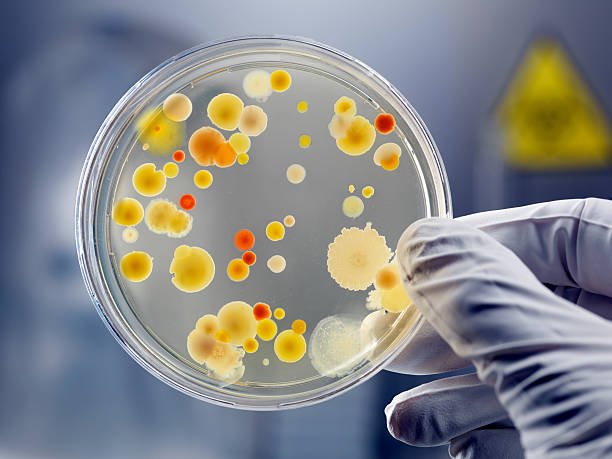

A clinical chemistry facility is a laboratory that specializes in the analysis of biological samples such as blood, urine, and other bodily fluids to diagnose and monitor diseases. Clinical chemistry facilities use a variety of techniques to analyze the chemical components of these samples, including spectrophotometry, chromatography, and immunoassays.
The tests performed in a clinical chemistry facility provide important information about a patient's health status, including their electrolyte balance, kidney function, liver function, blood glucose levels, lipid levels, and more. These tests can be used to diagnose a wide range of diseases, including diabetes, heart disease, kidney disease, and liver disease.
Clinical chemistry facilities are staffed by highly trained professionals, including clinical chemists, medical laboratory technologists, and other laboratory staff. These professionals work together to ensure that patient samples are processed accurately and efficiently, and that the results are reported in a timely manner to the physicians and other healthcare providers who rely on this information to diagnose and treat their patients.
In addition to diagnostic testing, clinical chemistry facilities may also perform research to develop new tests and diagnostic tools, or to better understand the underlying mechanisms of disease. They may also provide consultation services to other healthcare providers to help them interpret test results and develop treatment plans for their patients.

"Trust the expert in precision testing and analysis-choose our laboratory services."

"Accuracy you can trust, results you can depend on."
